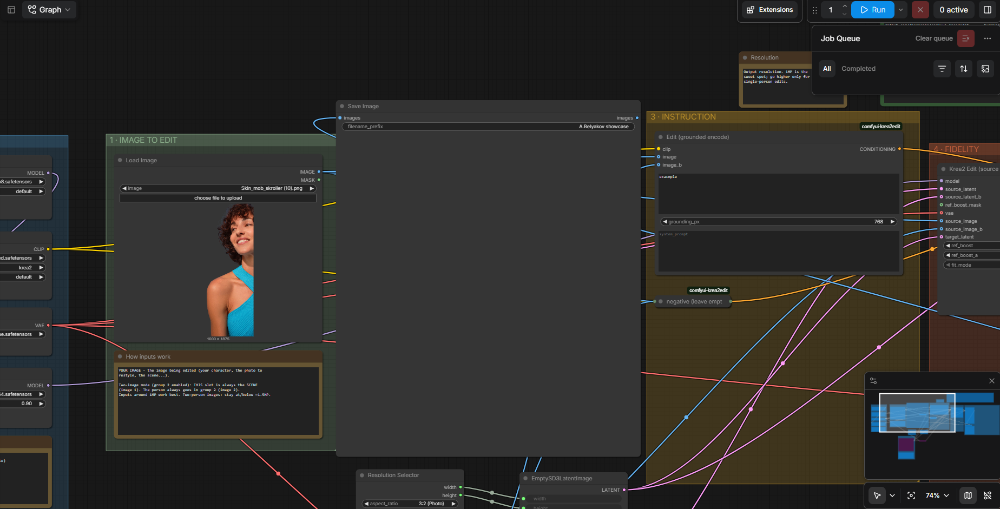
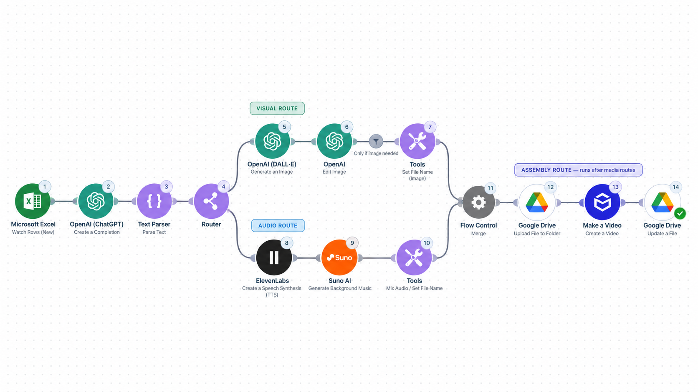

/
Главный кейсAI в
AI в
production
Воспроизводимые workflow для консистентных ассетов, видеопроизводства и ускорения креативных команд.
Что делал
Настраивал workflow и проводил практическое наставничество: от генерации статичных ассетов с консистентными объектами до сценария, визуалов, озвучки и видеосборки.
- ComfyUI и локальные модели для стабильной генерации.
- Автоматизация сценария, JSON-подготовки, визуала и аудио.
- Контроль качества и передача workflow production-команде.
Production pipeline
1 / Asset systemКонсистентные объекты и вариативные рекламные ассеты.
2 / ScriptЗаголовок → сценарий → структурированный JSON.
3 / Visual + audioГенерация визуала, voice-over и музыкального слоя.
4 / AssemblyСборка, проверка результата и экспорт готового ролика.

